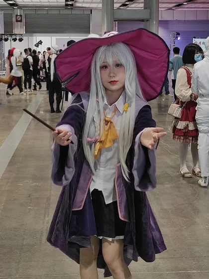

把 AI 用进日常
不只把大模型当搜索引擎。在试着让它帮我读代码、整理笔记、搭小工具——重点是「真的省下时间」，而不是看起来很酷。
写代码，也写点生活
初始化环境… 0%
沈阳理工大学 · 信息科学与工程学院 · 网络工程
你好，我是
我是一名 |
在沈阳理工大学读网络工程。喜欢写代码，能用 C / C++ 和 Python 把想法实现出来； 也喜欢在动漫与游戏里寻找灵感。最近在研究 AI，试着把它真正用进日常的学习和开发里。
先正式介绍一下自己
你好，我是向き（读作 MUKI）。
现在是沈阳理工大学 信息科学与工程学院的学生，专业是网络工程。 我的名字取自《魔女之旅》——喜欢那种一个人上路、边走边把见闻记下来的感觉， 所以这个网站也算是我的一份「旅人手记」。
平时的主线是写代码。能用 C / C++ 和 Python 把想法实现出来， 从算法题到小工具都愿意动手试一遍。对网络协议、系统底层和人工智能都很好奇， 遇到不懂的会先记下来，等哪天回头发现已经懂了。
学习之外我是个标准的二次元 + 游戏玩家：看番、打游戏是主要放松方式， 也常常因为喜欢某个游戏或某段剧情，冒出「自己动手做点什么」的念头。 最近在做的事是研究 AI，想把它真正用进日常的学习和开发里， 而不是只当个搜索引擎。
眼下最想做到的事 把专业课的基础打扎实，同时攒出几个拿得出手的成品——这个网站是第一个。
C / C++ / Python，从算法题到小工具都愿意动手试。
沈阳理工大学在读，专业课按自己的节奏重新过。
动漫与游戏是主要放松方式，也常因此想自己做点什么。
把大模型真正用进学习和开发，而不只是当搜索用。
三条线同时在走
不只把大模型当搜索引擎。在试着让它帮我读代码、整理笔记、搭小工具——重点是「真的省下时间」，而不是看起来很酷。
网络工程的专业课不能只靠考前突击。数据结构、计算机网络、操作系统这几门，我在按自己的节奏重新过一遍，配套把题也刷起来。
学编程最容易卡在「只看不写」。所以从猜数字到这个小站，我都坚持自己动手跑通一遍——能给别人看的成品，才算真的学会。
等你回来
如果你也对编程、动漫、游戏或者 AI 感兴趣，欢迎随时找我聊聊。
技能栈、学习路线、课程掌握情况，以及我的专业和做过的项目。
v2026-10-14 · 如果你看到这行，说明页面已是最新版
会一点，还在学更多
折腾各种大模型与 Agent 工具，试着把 AI 变成学习和开发的助力。
用 C / C++ 刷一些简单算法题，把基础打牢一点。
纯静态三文件，手写 HTML / CSS / JS，顺便当成前端练手。
从基础到方向，一步一个脚印
C / C++ / Python 语法、指针与内存、结构体、面向对象、STL 常用容器。
数据结构与算法、计算机网络体系结构、操作系统基本概念。
网络协议细节、组网与路由交换、网络安全基础。目标是把「会用」变成「懂原理」。
折腾大模型与 Agent 工具链，试着把 AI 真正用进学习和开发流程里。
把零散的知识做成完整项目：从需求、设计到部署上线，走通一次全流程。
学过什么，心里有数
拿到新东西先写个能跑的最小例子，有了感觉再回头看原理。卡住超过半小时就记下来，不硬耗。
笔记不抄课件。合上书，用自己理解的话重写一遍——写不出来，就是还没懂。
小游戏、工具、这个网站。有成品才有压力把细节做对，也才知道自己哪块是虚的。
用它解释概念、查报错、提思路；但代码要自己敲一遍，不然下次还是不会。
沈阳理工大学 · 网络工程
沈阳理工大学网络工程专业是辽宁省一流专业建设点， 专业特色为网络安全。2024 年软科中国大学专业排名中， 网络工程位列第 63 位（共 199 所高校参评），专业评价 B+，辽宁省内第四。
专业立足国防特色，注重夯实数学与自然科学基础，培养目标覆盖网络系统设计、开发、 运维与安全保障，毕业去向包括网络通信运营企业、政府事业单位、大中型企业网络信息中心、 互联网企业与网络设备研发制造企业等。网络工程也是 2015 年以来连续多年的 「绿牌专业」。
正在做的项目，和一些好地方
电脑随机出 1–100 的数字，提示「大了 / 小了」，直到猜中并统计次数。单文件 Python 实现，用命令行运行。
就是你正在看的这个页面。纯静态 HTML / CSS / JavaScript 手写，托管在 GitHub Pages 上。
试用各种大模型与 Agent，记录哪些场景真的能把效率提上去，哪些只是噱头。
用 C / C++ 刷简单算法题，重点是理解思路而不是背题解。
看什么动漫、玩什么游戏，还有一些我常去的地方。
这个小世界
喜欢沉浸在故事与画面里，从热血番到治愈番都看，也常常被一句台词戳中。下面是我偏爱的几部。
偏爱有设计感的单机与独立游戏，也喜欢研究玩法机制。下面是我常玩的几类。
关注大模型的发展，动手折腾各种 AI 工具，试着把它变成日常的助力。
用 C / C++ / Python 把想法实现出来，享受「跑通了」那一刻的成就感。
伊蕾娜的旅途是一站一站记下来的。抽一张，看看今天落在哪一句上。
按下「抽一张」，开始一段小小的旅途。
— 旅人手记
替身设定与战斗智斗的巅峰，越看越上头的长篇。

单元剧式的旅途故事，安静又带点苦涩。本站背景就出自这里。
把中二与青涩刻画得很细的恋爱番，氛围感极好。
潜水社团的爆笑日常，笑点密度极高，放松首选。
最沉迷的一类，追求手感和准度，喜欢打高难度谱面。
喜欢探索地图、解锁能力、反复回头开新路的循环。
喜欢剧情向视觉小说，会为了一个结局反复走线。
享受每一局都不一样的感觉，以及自由搭建的乐趣。
一些常用工具，和互联网上的好地方